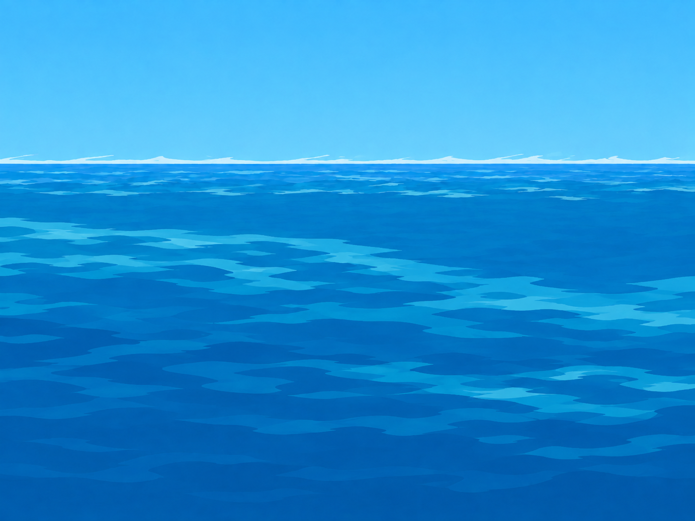
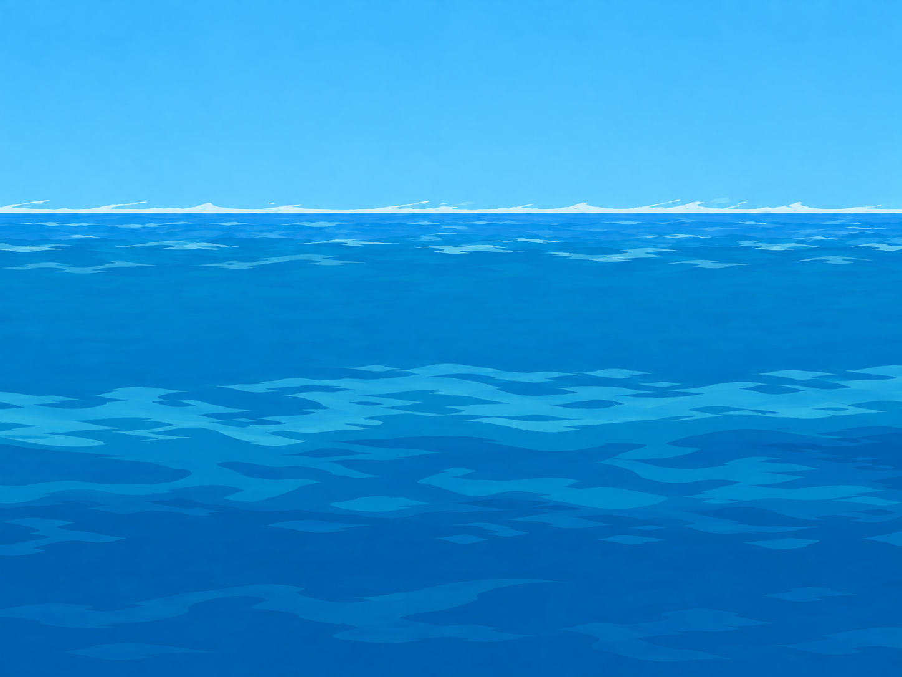
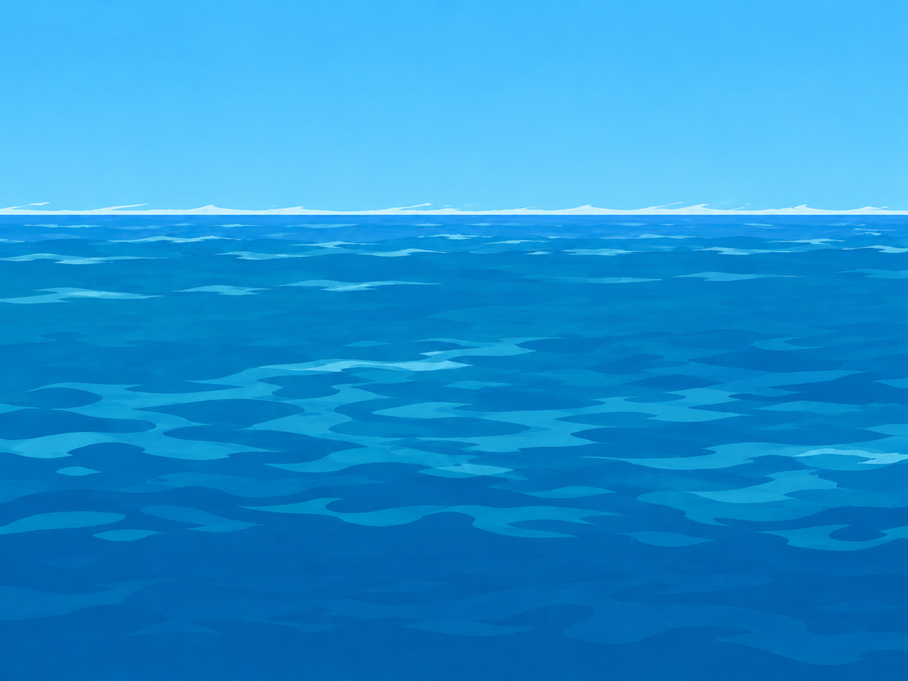
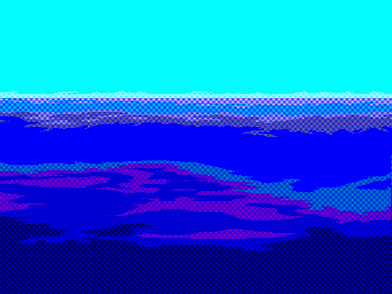
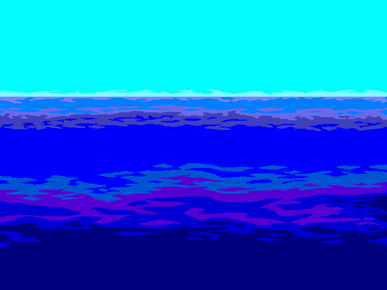

Two new alternatives in the approved Cartoon palette. The application chooses one background for a daytime scene; these are not frames of a wave animation. Judge the water patterns and whether both belong beside our existing ocean.

OCEAN00 draft. A higher band on the left slopes lower toward the right.
OCEAN01 draft. A broad calm middle band sits above the lower swells.
These decoded originals establish the water arrangement. Their diagnostic palette is not a reference for the Cartoon colors.

